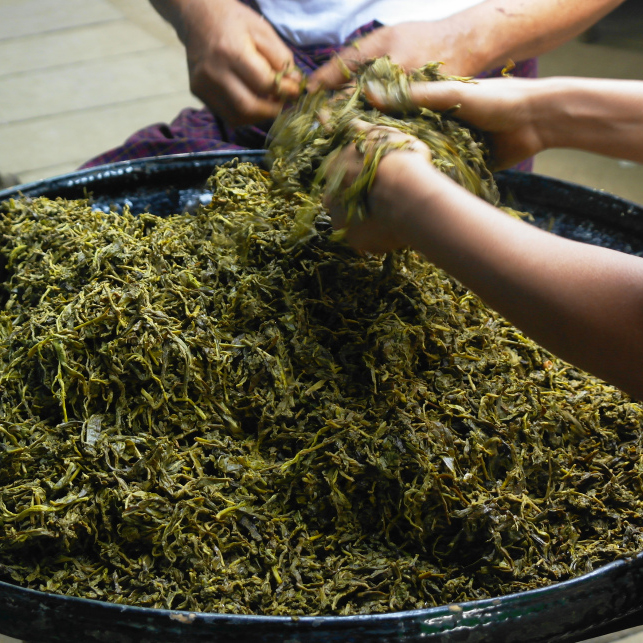
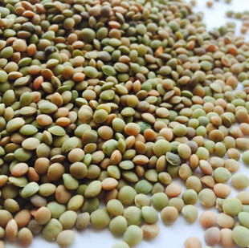

發酵茶葉沙拉
探索美食背後有哪些特別食材
Slide
遠古時期，發酵茶葉是各交戰王國間和解的信物，和平的象徵意義仍留存至今，也具有迎賓的意思。 傳統上發酵茶葉的製作方式為：將採集來的葉芽裝入竹子中，並埋於河邊一段時間。不過現在的做法有些不同：蒸葉芽（以釋放葉子水分，並以此作為醃漬的汁液），接著放入盆中蓋上蓋子，最後埋起來，經三至六個月的時間即完成。發酵茶葉的製作需要不少時間，沒有其它快捷的方式完成。 發酵茶葉的味道非常特別，口感有點乾澀、帶有橄欖的氣息、近似葡萄葉的味道，風味濃厚伴隨一絲清爽。
小扁豆又名兵豆、濱豆，屬一年生草本莢果，種子呈扁平狀，可作食用，原產地是印度。其蛋白質含量在蔬菜中排名第3，現已成為世界上很多國家的主要食品之一。
東南亞料理的重要香料之一，唐朝藥王孫思邈的《千金要方》中提到「辛主發散、苦主沉降」，意思是辛辣有助於體內熱氣消散，苦味則不適合夏天吃。東南亞不論是春夏秋冬都愛吃辣抗暑。
花生的種子含豐富的脂肪（約50%）和蛋白質（24-36%）蛋白質中含有人體所必需的幾種胺基酸，故營養價值甚高，可直接作為食物。相傳是由南美傳入歐洲，後傳到中國又再傳播到東南亞，在各國料理中也被廣泛使用。